Open your Jupyter GCP notebook in Pycharm
Managed Jupyter notebooks, like GCP's Workbench, is a great way to get started on a project. You can start prototyping and modelling in minutes. However, if you're like me, have imprinted to an IDE (for me it's Pycharm) and can't seem to work on anything else, here's how you can open your managed Jupyter notebook in Pycharm.
Warning: This (interpreters via SSH) only works for the paid Pycharm Professional product.
Note: We copy the python binaries from the managed instance to your local machine and not ideal if you have bad internet, but this is only for setting up. Pycharm needs the binaries locally so it can do it's thing like code completion, debugging, project-wide refactorings, etc.
Step 1: Create your Jupyter notebook
Open Vertex AI > Workbench > +CREATE NEW > ADVANCED OPTIONS > CREATE
All the default settings are fine but would beef up the machine type especially if you are doing some ML and working with large datasets. If you do use the default service account make sure it has the right permissions. You can't change the connected service account after creation. (Would be annoying to start over. Speaking from experience)
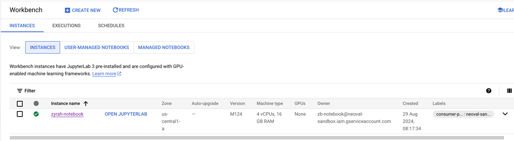
Once created, you can OPEN JUPYTERLAB and checkout all the notebook options.
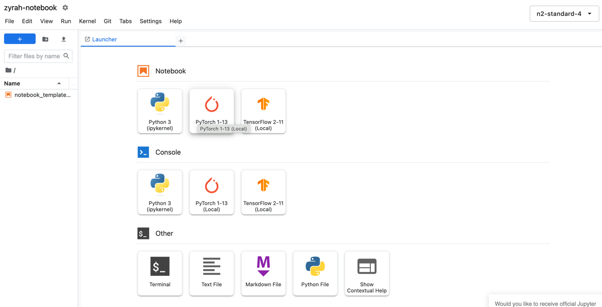
The notebook is a VM and the External IP addresses is ephemeral, a new address is assigned everytime it's stop-starts. Will need to configure to static and pin down an IP address. VPC Network > IP Addresses. Will ask you what to name it. More info here

Take note of the external IP address. This is what you will use to connect to the instance.
Step 2: Add your SSH key to the VM instance
If you don't have a SSH key, you can generate one with the following command:
ssh-keygen -t rsa -f ~/.ssh/jupyter
Copy the public key and paste to a text editor. Update the last string which is the username to jupyter.
This will allow you to update notebooks you've created locally in the UI (the OPEN JUPYTERLAB option).
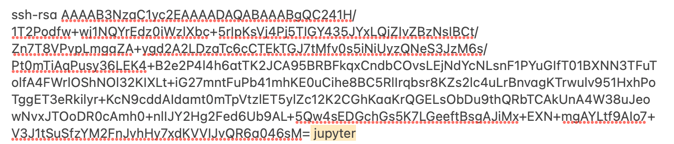
Since this a managed instance by Workbench, you can't add SSH keys in the instance UI. You'll need modify in Workbench via use the gcloud command line tool.
gcloud workbench instances update <NOTEBOOK-NAME> --metadata=ssh-keys="jupyter:$(cat ~/.ssh/jupyter.pub)" --location=us-central1-a --project <PROJECT_ID>
To ensure the instance uses the metadata ssh keys so will need to disable the OS login.
gcloud workbench instances update <NOTEBOOK-NAME> --metadata=enable-oslogin=false --location=us-central1-a --project <PROJECT_ID>
You can check the instance's UI if the metadata updated correctly.
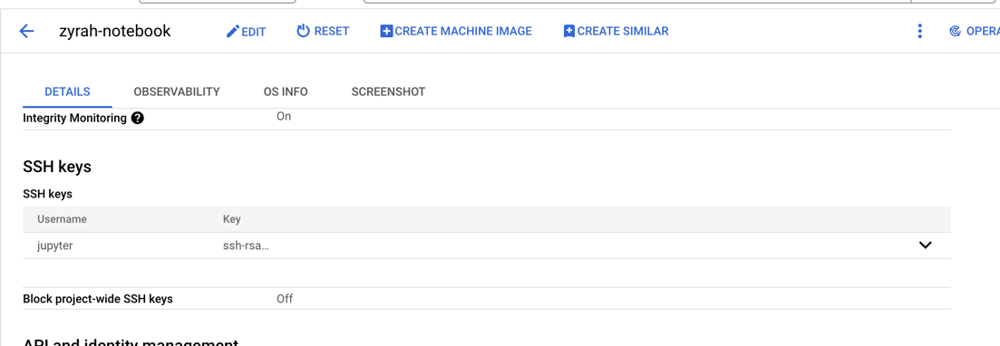
Step 3: Set up the SSH tunnel and interpreter
In a new project or existing one, go the bottom right at Python Interpreter > Add new Interpreter > On SSH...
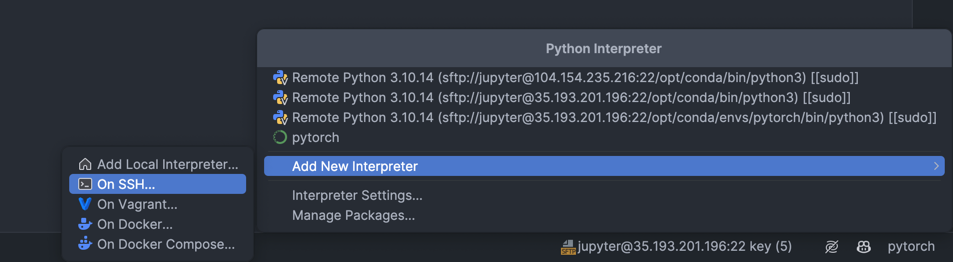
Host: is the static external IP address
Port: 22
Username: jupyter
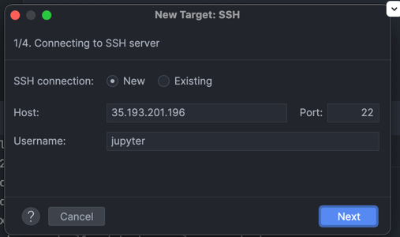
Use Key pair with the path of the ssh key.
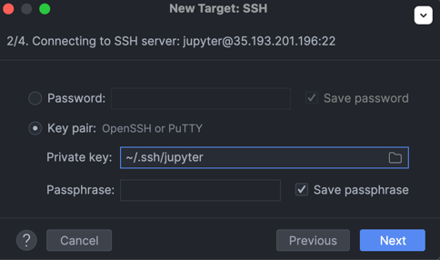
Hopefully, you should be able to connect. 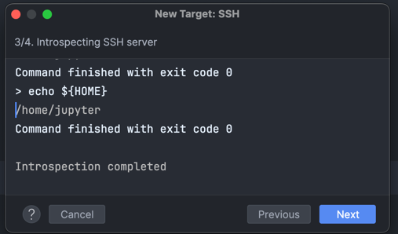
Next is the interpreter path. This will depend on what what you want. You have the option for python, pytorch,
tensorflow, like in Workbench.
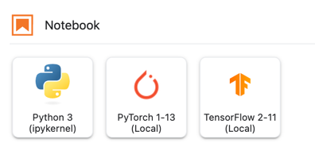
I would like to use pytouch. So select Conda Environment, might take a moment to think, then select the pytorch
environment.
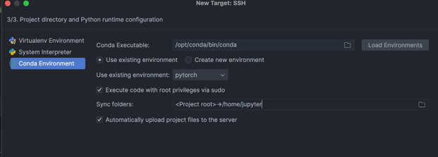
This takes a moment to set up. This is where we are copying the binaries from the managed instance to your local machine.
Step 4: Create a new Jupyter notebook and check it works
Create a new Jupyter notebook and run a cell to see if it works. Check out the menu bar. You can see that it's
tunnelling to the instance, with the PyTorch kernel that was set up in the interpreter. If you would like to use a
different kernel, you can set it up in the new interpreter.
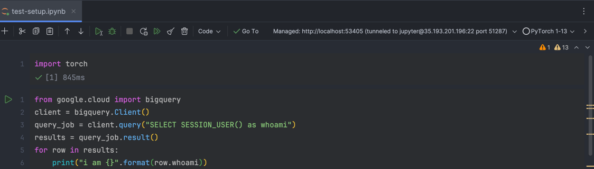
As a sanity check I run import torch and check if bigquery is auth correctly. Now you are good to go!
Sources
https://cloud.google.com/compute/docs/connect/add-ssh-keys https://cloud.google.com/compute/docs/ip-addresses/configure-static-external-ip-address#console https://youtu.be/6RlgQBB1UDU https://www.jetbrains.com/help/pycharm/configuring-remote-interpreters-via-ssh.html#ssh